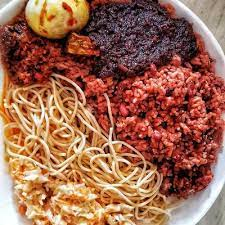

Waakye

Description
Waakye is a famous rice dish in Ghana eaten mostly in the morning or evening. A great waakye dish should be colorful with the right consistency of rice and beans.
There are many different combinations when making or buying a waakye dish which is decided by the taste of the consumer.
It's really nutritious and one you should definitely try if you're ever in Ghana :)
Ingredients
- dried black eyed beans/ peas soaked overnight
- rice
- water
- dried millet stalk leaves
Steps
-
Pour over a litre of water into a saucepan together with the millet leaf stalks. Put on high heat to boil. The millet stalk leaves will start omitting its colour and the water will start turning into a deep wine colour.
-
Rinse the soaked beans and add to the boiling water. Cover and let it cook till tender. Mean while rinse the rice till the water is cleared. Add the washed rice into the saucepan together with salt to taste. (You might need to add more water.) Add water if needed. Stir and cover tightly.
-
Do not remove the millet stalk leaves. When the rice boils over, reduce heat and simmer till the water is absorbed and the rice is cooked through.
-
Rest for three to five minutes, remove millet stalk leaves and fluff with a fork.